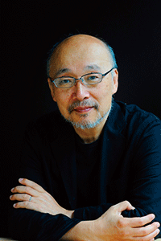
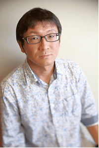
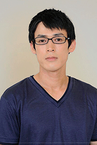
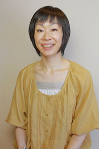

（撮影：宮内勝）

（撮影：清水俊洋）
林 慎一郎 Hayashi Shinichiro
（劇作家 · 演出家）
都市に暮らす人々の姿を、俯瞰的な目線からノイジーに点描することで、切実な哀しみを透明な笑いに変え、その中に蜃気楼のように浮遊する「都市」の姿を切り取ろうと試みている。
代表作に、『夜ニ浮カベテ』（2004年初演）、
『大陸間弾道語学教室 東風荘』（2005年初演）、『サブウェイ』などがある。
現在、戯曲塾、伊丹想流私塾・師範。劇作家、演出家としての活動の他、劇場主催の演劇ワークショップや、小学校、高校の「総合的な学習の時間」などの講師も多数務めている。
（撮影：清水俊洋）
原 和代 Hara Kazuyo
（振付家 · ダンサー）
大学入学と同時にENTEN・ポポルヴフに参加、コンテンポラリーダンス作品の出演・振付など創作活動を開始する。またソロダンス作品を大阪・東京で発表。
劇団太陽族・ラックシステムなど演劇作品の振付を多数手がけており、極東退屈道場には2010年「家、夜の果ての......」公演以降全作品に振付で参加。
演劇とダンスの共生を模索している。2014年JCDN「踊りに行くぜ!!IIvol.5」Bプログラム選出アーティスト。クラシックバレエ講師としても大阪を拠点に活動している。神戸学院大学人文学部非常勤講師。
（撮影：清水俊洋）
あらいらあ Arairaa
大阪芸術大学舞台芸術学科卒。
劇団新感線、劇団ヴァダーなどを経て
「あらい笑劇場」を立ち上げ。
現在はフリー。
主な出演作にKUTO-10『後ろ前の子供』(作:三枝希望 演出:林慎一郎)など。極東退屈道場作品には『サブウェイ』（初演・再演・三演）、『タイムズ』（初演）、『ガベコレ』に出演。

（撮影：清水俊洋）
石橋 和也 Ishibashi Kazuya
関西学院大学劇研にて演劇を始め、劇団水の会旗揚より参加。同劇団退団後、上京し上杉祥三に師事。
自らのプロデュースで一人芝居等の作品を発表。近年は、コンテンポラリーダンス“ユニットキミホ”や、“少年王者舘”など身体を活かしたジャンルにも参加している。座・高円寺劇場創造アカデミー3期修了。
更に詳しくはこちら。
（撮影：清水俊洋）
井尻 智絵 Ijiri Tomoe
アイホール演劇ファクトリー第７期を経て「水の会」に入団。
主な出演作に、水の会『赤い善意』『寝耳に汽笛』、極東退屈道場＋水の会『家、世の果ての......』など。極東退屈道場作品には『サブウェイ』（初演・再演・三演）、『タイムズ』（初演）に出演。
（撮影：清水俊洋）
小笠原 聡 Ogasawara Sou
(劇)ミサダプロデュースを経て、AI・HALL＋小原延之共同製作『hunter』、DIVE×メイシアター合同プロデュース『オダサク、わが友』（作：北村想 演出：深津篤史）などに出演。極東退屈道場作品には『サブウェイ』（初演・再演・三演）、『タイムズ』（初演）、『ガベコレ』に出演。
（撮影：清水俊洋）
後藤 七重 Goto Nanae
児童演劇を志し、プロとして全国の小学校を巡回、演劇と教育に携わる。1995年以降、フリーの俳優として幅広く活動。
主な出演作に、ＡＩ・ＨＡＬＬ＋小原延之共同製作『hunter』、極東退屈道場＋水の会『家、世の果ての……』（作：如月小春 演出：林慎一郎）など。極東退屈道場作品には『サブウェイ』（初演・再演・三演）、『タイムズ』（初演）、『ガベコレ』に出演。

（撮影：清水俊洋）
猿渡 美穂 Saruwatari Miho
大阪芸術大学舞台芸術学科卒業後、関西を中心に舞台に出演。声のプロダクション「キャラ」所属、NPO日本ヨガ振興協会認定講師、役者、ナレーター、シンガー、演技講師、作詞、演劇ユニット「宇宙ビール」では作・演出・構成も手掛ける。
主な出演作に、AI・HALL＋岩崎正裕共同製作『フローレンスの庭』『どくりつこどもの国』、極東退屈道場＋水の会『家、世の果ての......』など。極東退屈道場作品には『サブウェイ』（初演・再演・三演）、『タイムズ』（初演）、『ガベコレ』に出演。
（撮影：石川隆三）
中元 志保 Nakamoto Shiho
近畿大学舞台芸術専攻卒業。
現在、フリー。
アイホールの自主企画に多く出演。
近年では、極東退屈道場＋水の会『家、世の果ての……』、劇団太陽族＋ＡＩ・ＨＡＬＬ共同製作『大阪マクベス』など。極東退屈道場作品には『サブウェイ』（再演・三演）、『タイムズ』（初演）に出演。